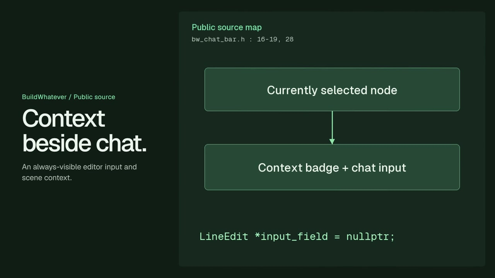
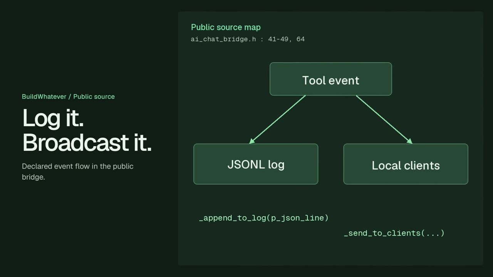

Foundation
A fork of Godot 4.6.
BuildWhatever
An AI-native game editor built on a Godot fork, bringing AI-assisted creative workflows into the engine's editing environment.
A fork of Godot 4.6.
AI-assisted creation within the editor.
Public source archive and release repository.

